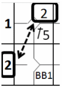

There are certain specific events or actions that enable the batter to become a runner and
therefore entitle him to first base without risk of being put out, provided that he advances and touches first base.
These are base on balls, intentional base on balls and hit by pitch.
- All free advances to first base are not considered times at bat for the
batter-runner concerned.
|
- When runners are forced to advance as a consequence of the batter-runner’s advance
to first, the batting order number of the batter-runner must be recorded in the square corresponding
to the base reached.
|

|
- When a batter who has become a runner refuses to exercise his entitlement to first
base, or fails to touch the base, he is charged with an automatic putout and a time at bat (Out By
Rule 6) [OBR 9.14(c)].
|
- The total number of free advances to first base awarded to each team is recorded,
subdivided into categories, in the appropriate space on the box score balance at the bottom right of
each score sheet where, along with At Bats and sacrifices, they are used to calculate the number of
plate appearances (PA) for that team.
|